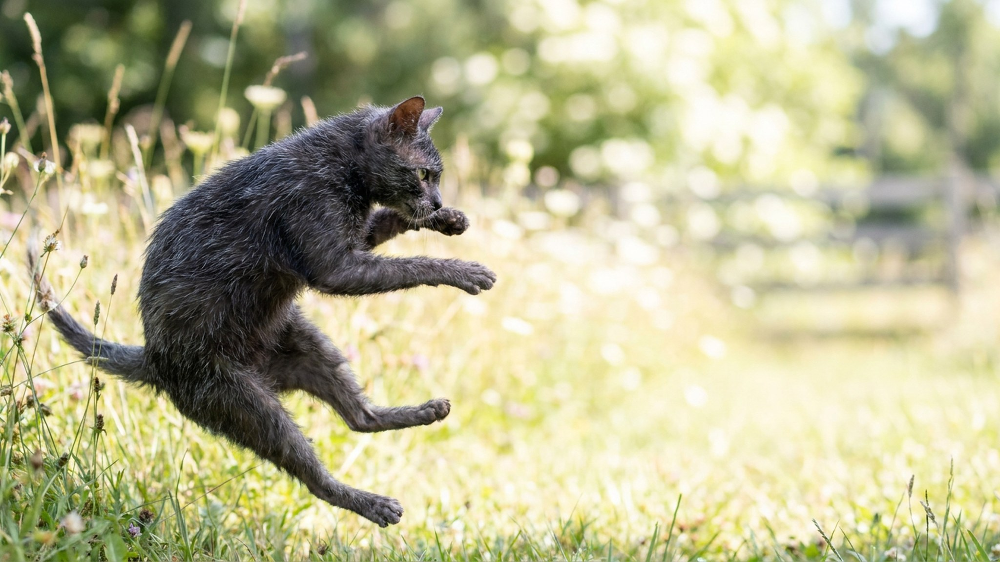

Первый взгляд на ликоя — и большинство людей теряются: клочковатая шерсть, голое лицо, пронзительные глаза. Кошка-оборотень — это не клише, а официальное прозвище породы. Но стоит взять ликоя на руки — и картина меняется: перед вами активный, привязчивый и нежный кот, который ходит за хозяином как собака. Разбираем породу честно.
🐾 Первая помощь — всегда под рукой
AnimaLife подскажет, что делать в тревожной ситуации с питомцем ещё до визита к врачу. Откройте в один тап.
Ликой возник в США в начале 2010-х годов из естественной мутации у домашних кошек. Характерная особенность — неполный фолликулярный рост: часть волосяных фолликулов просто не работает. Отсюда проплешины вокруг морды, ушей и лап, чередование голой кожи и короткой шерсти.
Это не облысение и не болезнь — это генетическая особенность породы ликой. Важно: некоторые особи периодически теряют почти всю шерсть (например, зимой или в стрессе), а потом она частично отрастает обратно. Это нормально для породы.
Внешность ликоя обманывает. По темпераменту это одна из самых активных и «человекоориентированных» пород среди кошек.
Из-за частично открытой кожи ликой более чувствителен к температуре и загрязнению, чем обычная кошка.
Ликой — не порода для тех, кто хочет красивую «диванную» кошку. Это кот для активного взаимодействия: игры, контакт, совместное время. Если готовы уделять внимание — получите преданного, весёлого и абсолютно нестандартного питомца.
Порода редкая и дорогая. Перед покупкой важно найти проверенного заводчика с подтверждёнными родословными: ликоев часто подделывают, продавая больных или нетипичных кошек. Спросите у заводчика карту здоровья родителей и результаты генетических тестов.
🐾 Экономьте на лишних визитах к врачу
Сначала спросите AI-ветеринара в AnimaLife — часто этого достаточно, чтобы понять, нужен ли визит к врачу.
🐾 Понравился разбор?
Подпишитесь на канал — каждый день разбираем по одному тревожному симптому у кошек и собак: что в пределах нормы, а когда пора к врачу. Подпишитесь, чтобы не пропустить разбор, который может спасти здоровье вашего питомца.
Материал носит информационный характер и не заменяет очную консультацию ветеринара.